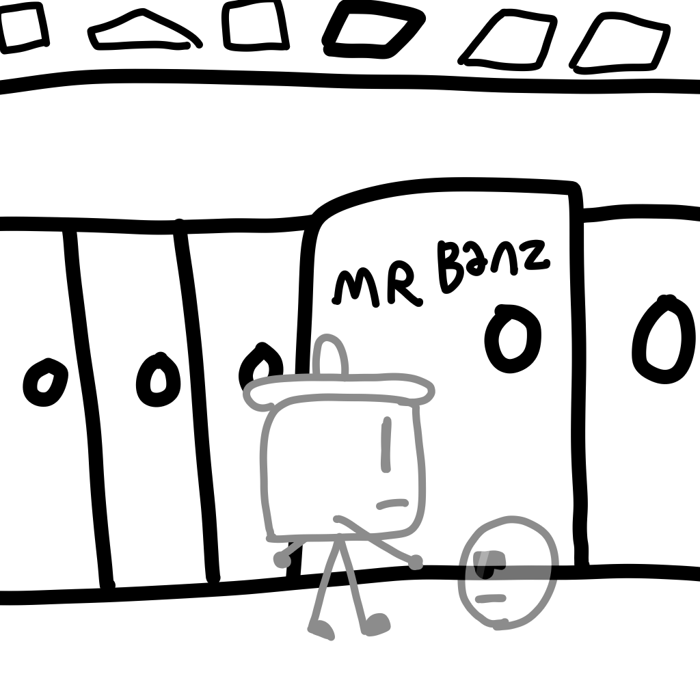

Diary Of A Trash Can: Day 1

I'm no ordinary trashcan, I'm Jake, I'm 13, and this is my diary. Today, I went to Mr. Banz's math class. It was awful as usual. There are some great things though, starting with Beatrice. If you don't know who she is, she is a paper cutout of an anthropomorphic cat. The other thing about Beatrice is that she can slip through cracks and narrow passages.